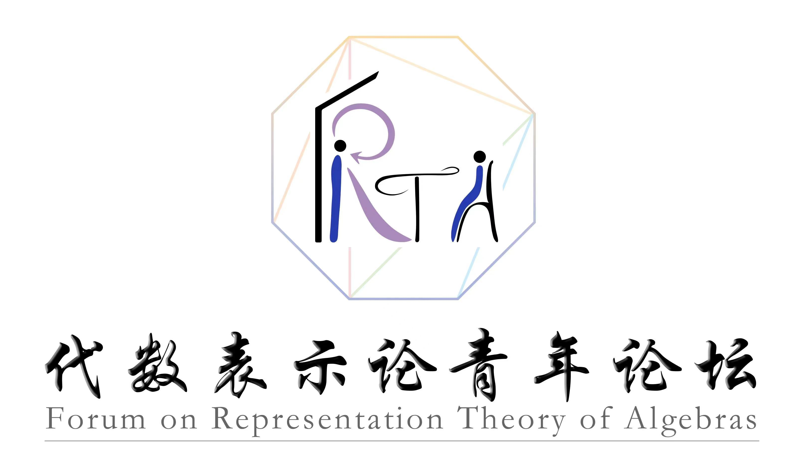

代数表示论青年论坛
Forum on Representation Theory of Algebras
论坛简介
Forum Introduction
本论坛是开放的学术交流平台，旨在加强代数表示论及其相关领域的学术交流与国际合作，诚邀国内外优秀中青年学者报告前沿科研进展与学术成果。 本论坛将以线上形式进行，报告时间为一小时。
The Forum of Representation Theory of Algebras (FRTA) is an open academic exchange platform, aiming to strengthen academic exchange and international cooperation in the representation theory of algebras and related fields. We sincerely invite excellent scholars to report on cutting-edge scientific research progress and academic achievements. This forum will be held online and each talk will last one hour.
组织委员会
Scientific Committee